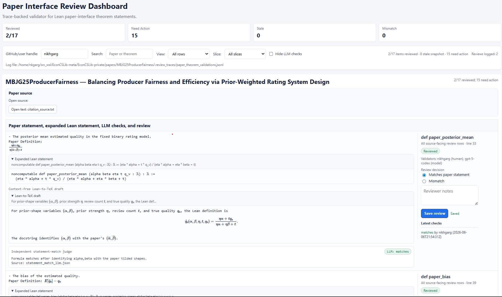
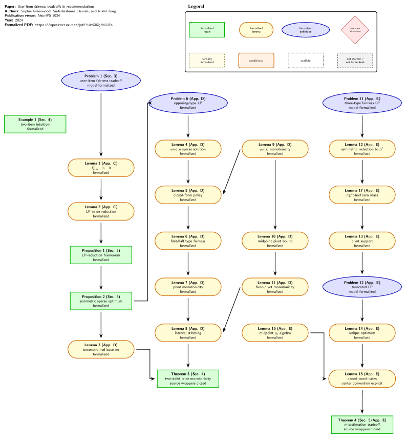
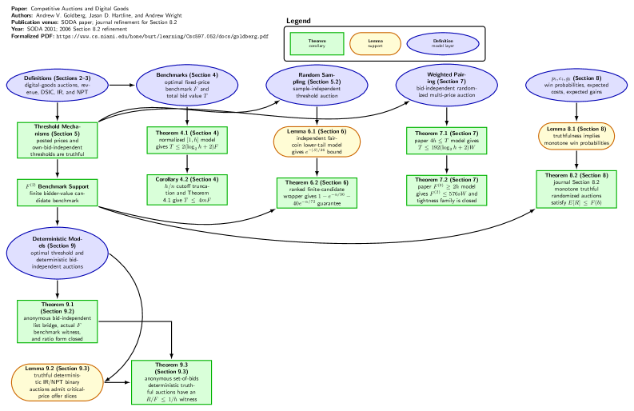

Builds a Lean 4 library and LLM-driven workflow that formalizes Economics & Computation research papers, with a dashboard for checking statement translations.
Abstract
This paper presents EconCSLib, a Lean 4 library and workflow for formalizing research papers in applied modeling fields such as Economics and Computation, with language-model assistance. The goal of EconCSLib is to enable researchers to formalize their papers in Lean without knowing Lean themselves. The central design principle is a human-AI-Lean formalization workflow: an LLM writes Lean code, Lean checks formal statements and proofs, and both humans and LLM-as-judge processes can verify that the paper's statements were translated into Lean correctly. We develop agent skills, human-facing reporting, a review dashboard, and auditing procedures to support this workflow. The current public repository contains 20 formalized papers and 4 partially formalized papers, along with shared libraries for probability (including stochastic processes), auctions, matching markets, social choice, and graph tools, totaling 986,391 lines of Lean code. To our knowledge, we are also among the first applied math researchers to systematically pursue Lean formalization of one's own publications in the process of building such a community library. We welcome users and contributors to the project. The library and workflow are available at https://github.com/nikhgarg/EconCSLib, with corresponding project webpage at https://gargnikhil.com/EconCSLib/.
Problem
Lean libraries have mostly covered pure mathematics, so applied fields such as Economics & Computation have seen little formal verification. Writing Lean by hand is tedious, and researchers usually do not know Lean.
Approach
EconCSLib is a Lean 4 library with a human-AI-Lean workflow. An LLM (Codex/GPT-5.5) writes Lean code, Lean checks the proofs, and humans plus LLM-as-judge processes verify that paper statements were translated faithfully. The workflow is supported by agent skills, auto-generated statement dependency DAGs, a review dashboard comparing LaTeX and Lean statements, and auditing procedures. Shared libraries cover probability and stochastic processes, auctions, matching markets, social choice, optimization, and graph tools.

Figure 2: Screenshot of the paper-interface review dashboard for [ 48 ] . For each paper mathematical statement, the dashboard shows the paper’s L a T e X statement and Lean statement, so that a human can verify that these match. The dashboard further shows an AI-generated Lean-to-TeX draft (generated without any context for the original paper)—ideally, this should match the original paper, and ma

Figure 1: Full paper statement dependency DAG for [ 18 ] . The DAG is auto-generated at the beginning of a paper’s formalization process, and it is kept up-to-date so that a human can quickly understand formalization status. This DAG shows that the paper has been completely formalized.
Results
The repository contains 20 formalized and 4 partially formalized papers, totaling 986,391 lines of Lean, including Gale–Shapley, Roth, and the AdWords paper. LLM-as-judge review found nearly all statements matching; human review has not yet been done. Token usage for 13 papers cost roughly $16K at list rates.

Figure 3: Full dependency DAG for [ 21 ] , Competitive Auctions and Digital Goods . The DAG shows the SODA paper. Section 8.2 is checked against the later journal version’s monotone-auction formulation of the revenue upper bound; the preliminary unrestricted wording is tracked only as source-version provenance.